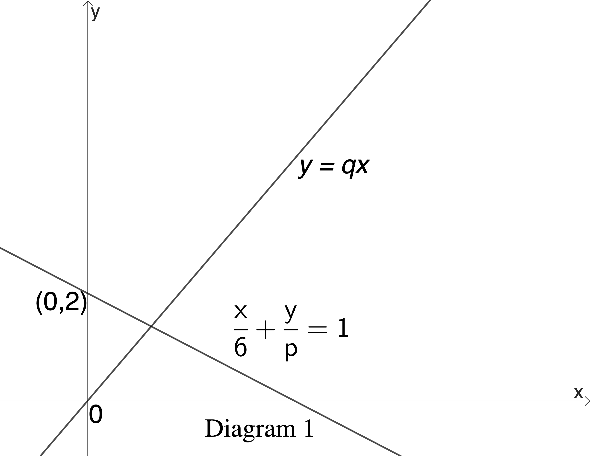

It is given that four consecutive terms of a sequence are 50, 45, \(x\) and \(y\).
State the value of \[y - x \quad \textit{if the sequence is an arithmetic progression.}\]
\(\frac{y}{x}\) if the sequence is a geometric progression.
Diagram 1 shows two straight lines.

Find the value of q.